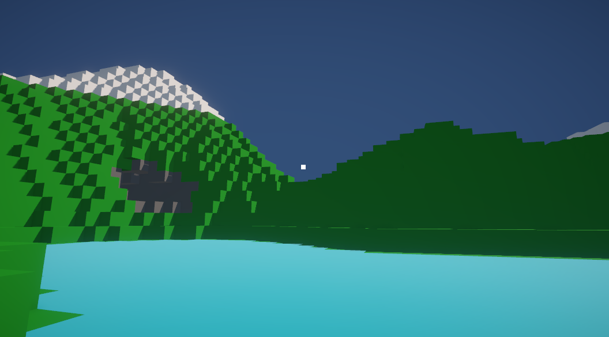

Voxel Engine
- Role - Designer, Programmer
- Time Frame - 2 Months
- Team Size - Solo
- Tools - Unity
This voxel engine is primarily a system for generating and rendering voxel landscapes using a voxel-chunk system and a number of highly customizable parameters. Once a world is generated, the user can manually break or place blocks to build whatever they like using differently textured voxels, which they can select at will.

The Voxel class itself is very simple. All the mesh generation and rendering is done by the chunk, so individual voxels don't need a lot of information. All that's stored here is the voxel's type, position in the chunk, and active status.
When a chunk is created, it is first populated with voxels. Each of these voxels is initialized with its starting position and type, which is determined by giving its position to our world generation function. Importantly, if the voxel has the type 'air', it is set to be inactive. This is because we don't want to consider air blocks when calculating meshes and collision later on.

Once the chunk is populated, we iterate through each voxel and run a series of checks to generate the mesh. For each voxel, this function checks each of its neighbors to determine whether that face is visible (if the neighbor is active, then that neighbor will be covering the face), so we only need to render visible faces, saving us a lot of processing power. Then, each visible face has its vertices and normals added to their respective ChunkMeshes so they can be generated later.
The reason we split chunks into separate ChunkMesh objects like this has to do with the way meshes are rendered. When a solid color material is assigned to a mesh in Unity, the entire mesh will be rendered with that material. In order to have different kinds of blocks contained in a single chunk, we generate a separate mesh for each voxel type. Additionally, this doesn't really impact performance because hidden faces don't get generated anyway, so there's no overlapping even with multiple meshes.